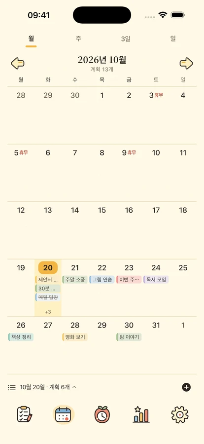
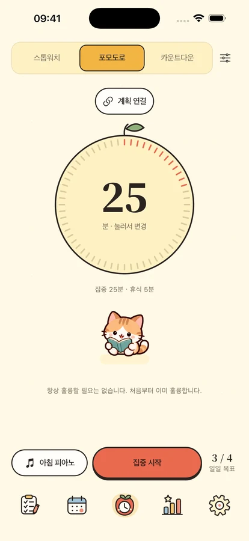
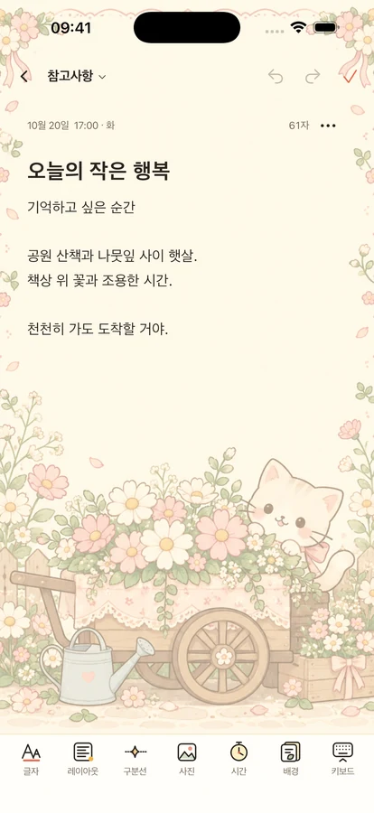

소중한 일을,
조금씩 함께.
네 가지 영역으로 할 일을 정리하고 눈앞의 한 가지에 집중하세요. 메모와 특별한 날도 작은 친구들과 함께 기록해요.
iPhone·iPad용 · 출시 준비 중

한 번에 하나씩, 나의 속도로.
작은 일 하나부터
할 일과 시간 사이에 여유를 더해요.

계획에 알맞은 자리를.
중요도와 긴급도로 할 일을 나누고 타임라인과 일·주·월 달력으로 확인하세요. 반복 계획, 하위 계획, 기기 내 알림을 지원해요.
중요·긴급중요·비긴급긴급·비중요비중요·비긴급
지금은 눈앞의 한 가지에.
뽀모도로, 카운트다운, 스톱워치와 오프라인 음악 8곡, 환경음 11종을 제공해요. 네 친구와 플립 시계가 집중과 휴식을 함께해요. 전체 음원은 Plus 또는 3일 체험에 포함되며 음악 1곡, 환경음 1종, 무음은 무료예요. Plus: 시계 Plus 스타일 · 위젯 Plus 스타일 · 고급 통계 · 계획 템플릿 · 자동 클라우드 백업 · 백업 기록.



기억하고 싶은 날과 생각.
서식 있는 메모, 사진, 편지지를 저장하고 날짜·분류로 다시 보세요. 생일과 기념일은 디데이로 기다려요. iOS 17 이상에서 계획·달력·집중·디데이·메모 위젯을 사용할 수 있어요.
나의 일상은 나의 것.
기기 내 기능은 로그인 없이 사용해요. 클라우드 백업은 직접 업로드하며 사용 분석은 기본 꺼짐이에요. 내보내기, 개인정보 선택, 계정 삭제를 직접 관리할 수 있어요.
개인정보 처리방침